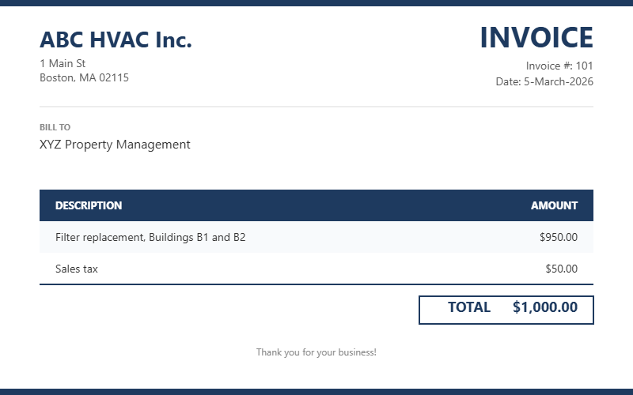

Inside the Noise: What Real-World Invoices Teach Us About Unstructured Data (March 5, 2026)
TL;DR
Automated invoice coding for real estate is surprisingly hard. Invoices may look structured, but they are messy documents that present four key challenges: they can contain too much information (multiple invoices bundled together, irrelevant context from emails), too little information (missing context such as contract terms or payment history), difficulty extracting structured data (ambiguous layouts, date format confusion, OCR errors, information scattered across documents), and complexity in turning that data into proper coding (unclear late-fee policies, changing vendor codes, sparse training data, and challenges in measuring AI accuracy). Generative AI and LLMs have been game changers for data extraction and prediction, but many open problems remain from choosing the right optimization metric to balancing how much to rely on general invoice-reading and understanding capabilities vs customer- and vendor-specific customization.
Full Post
Overview
An invoice is not the product of a creative writing process, but rather a functional document that serves a specific purpose: to request payment for goods or services rendered. Practically every invoice contains the same essential information such as vendor name and address, customer name and address, invoice number and date, line items and amounts. Hence it would seem natural to expect that invoices are structured documents that follow a standardized format. Unfortunately, in practice they are often "messy"—not only in terms of the way they present data, but also in terms of missing context or potentially misleading additional content. We will explore challenges for automated invoice coding along the following dimensions, using concrete examples abstracted from real invoices we encountered in the context of real-estate management:
- Too much information
- Missing information or context
- Extracting structured data
- Turning structured data into a coded invoice
Too Much Information
While one might imagine each invoice to exist as a separate document, in an enterprise setting multiple invoices could be bundled together in a single file, e.g., a PDF document attached to an email. Hence, given such a file, we must first determine which pages are part of any invoice and which of them belong to the same invoice. This often cannot be done for each individual page in isolation, but requires a holistic view of the entire document. For example, a table may straddle two pages, making the second page difficult to interpret without the first. Or consider the "how to read this invoice" section of a utility bill. It could belong to any invoice from the same provider, but its position in the page sequence provides clues for the specific document.
Similarly, explanations and instructions provided in an email to which the invoice document was attached may be relevant for one of the invoices in the document, but not for others. For example, when the email explains that the work listed in invoice A was performed at property X, then this information is misleading and irrelevant for invoice B, where it could result in incorrect coding. Hence automated invoice coding must carefully determine which information to ignore.
Missing Information or Context
Missing information or context can cause even more problems than too much information. Consider a repair person whose invoice only lists the work hours and items purchased at a home improvement store, but does not specify the property where the work was performed. This information may be contained in an earlier email exchange, but the AP clerk submitting the invoice to an automated coding system may not have access to those emails or may not remember to include them. Worse yet, the relevant information may have been provided via a phone call that is not available in the appropriate digital format to accompany the invoice when submitting it for automated coding.
A similar, and quite common in real estate management, situation are invoices that arise in the context of a larger contract or agreement. Here contract terms and information, such as custom rebates or charges that can be ignored, are often not detailed on individual invoices. Hence the invoice is difficult to understand and code without access to the relevant contract information.
Inherent communication latency can also lead to missing context. Consider an invoice sent by the vendor on February 1, which the customer pays on March 2. When generating the next invoice on March 1, the vendor does not know about that payment and hence may include the previous charges in the new invoice. When the customer's AP clerk then submits this March 1 invoice to the automated coding system on March 15, we must consider the March 2 payment for the February 1 invoice to not double-pay those charges on the March 1 invoice. Similar issues may arise when past invoices are only partially paid, maybe due to disputes about charges, and then correction invoices are issued to reflect the adjustments. In this case, the entire invoice and payment history must be considered to determine the correct amount to pay for the current invoice.
The common theme is that automated invoice coding is not just about processing an invoice itself, but also about understanding the broader context in which it exists.
Extracting Structured Data
After successfully eliminating superfluous information and including the relevant context, we need to extract structured data from the invoice, such as vendor name and address, invoice number, date, line items, and amounts. And while invoices may appear structured, they tend to hold surprises. To illustrate the difference between unstructured and structured data, consider the following made-up example.
Examples of structured data items related to the given invoice include (vendor name, "ABC HVAC Inc.""), (vendor street address, "1 Main Street"), (invoice date, 03-05-2026), and (total amount, 1000.00). Each data item is a pair (key, value) where the key is a descriptive label with semantic meaning and relevance in the context of invoice coding. Values often require normalization to a consistent format, as illustrated by the date, which appears in day-month-year format on the invoice but is normalized to mm-dd-yyyy format in the structured data.
Clearly, the raw image data in the png file does not directly reveal such key-value pairs, but instead encodes a sequence of image pixels. Even when interpreting these pixels as the text they represent, we are still left with unstructured data that must be processed further. Consider the vendor name and address in the upper left corner, which corresponds to text lines "ABC HVAC Inc.", "1 Main St", and "Boston, MA 02115"; lacking keys and normalization. While "Date: 5-March-2026" appears closer to the structured (invoice date, 03-05-2026), one still must determine the correct date type (e.g., invoice date vs due date) and normalize the date format. The latter can be tricky. For example, does 5-3-2026 mean March 5 or May 3? The answer differs depending on the country and may be hard to resolve for North American vendors operating in the US as well as Canada and Mexico.

The example above shows a typical scenario where the invoice only lists an aggregate charge for work performed at two properties. It is relatively easy to extract (total amount, 1000.00) and even that work was performed at properties B1 and B2. But the invoice does not specify how much of the total amount is attributable to each property, nor does it provide details such as hourly rate, hours worked, and costs for materials and supplies. Depending on the customer's policy, such details may be required, e.g., to attribute cost to individual properties or to charge labor and materials to different accounts. Those details may be found in an email exchange or phone call with the vendor, an attached receipt from a home improvement store, and/or a handwritten note on the invoice. In scenarios like these, it does not suffice to obtain structured data from the invoice: the desired structured data for automated coding requires extracting and linking fragments of information across documents.
Sometimes relevant structure is conveyed through layout clues aimed at a human reader. Consider the following example of a line-item table where one must leverage layout clues such as indentation, spacing, visual grouping, and even font characteristics like boldness to determine that (1) some rows show person names and others their hours worked and (2) the rows between names represent the hours for the person above them:
| Service |
Charge |
| Mary Liu |
|
| regular hours: 5.0 @50 |
250.00 |
| overtime hours: 2.0 @70 |
140.00 |
| Carlos Schmidt |
|
| regular hours:... |
... |
Intra-document context and relationships between elements also play a crucial role for addressing OCR errors, i.e., problems caused by the process of turning image data into text. Common examples include confusing zero and the letter O, the number one and the letter I, or the number five and the letter S. When invoices are scanned in low resolution or contain hand-written notes or blurry store receipts, OCR errors may impact entire phrases, e.g., turning Mary's regular-hour information "5.0 @50" into "SO OSO". In such cases, one must leverage the context of the line-item table to determine that for a person's regular work hours, a number like 5.0 is more likely to appear than the letters S and O. With more advanced reasoning capabilities, one can prevent number misinterpretation by verifying that the total charge for Mary's regular hours is consistent with the 5.0 hours and $50 hourly rate, and that the total matches the sum of individual charges. Of course, this can also be challenging when the invoice contains late fees, discounts, and other adjustments that are not clearly labeled or appear outside the line-item table.
In summary, extracting structured data from invoices is not a straightforward process of reading off key-value pairs. Instead, it requires careful consideration of layout clues, intra-document context, and relationships between documents and their elements to determine the relevant information and resolve ambiguities and errors. Here the rise of generative AI, and large language models (LLM) in particular, has been a game changer. Before, algorithms were too brittle to deal with all these complex challenges. For instance, even a simple layout change could throw off traditional template-based document-processing approaches.
Turning Structured Data into a Coded Invoice
Even after extracting structured data from invoices, there is still a lot of work to do to code them properly. We already eluded to the general hardness of invoice coding in an earlier post. Here we now present a few real-world-inspired examples. Note that invoice coding requires determining who to pay how much from which account, and, in the context of real estate management, often also to assign costs to properties.
Assume the structured data properly reflects late fees caused by earlier unpaid charges, as well as adjustments and discounts due to a contractual agreement. However, the invoice does not specify whether the customer is expected to pay the late fees or if they are just informational. In some cases, customers may have a policy to never pay late fees, but there may be exceptions.
Similarly, the invoice may show a due date, but because of terms such as NET30, the actual due date is 30 days after the invoice date, which may differ from the due date shown on the invoice. For invoice numbers, the customer may rely on the vendor-selected one for some vendors, but may generate their own internal invoice numbers for others. For instance, they may append a running number to make them unique or encode relevant information such as account number and date for a utility bill. Hence an automated invoice coding technique must decide when to predict vs when and what to read off the invoice.
Any method that learns from past coded invoices how to code new ones will potentially struggle when crucial information or coding practice changes frequently. In the real estate context, new vendors are added frequently, vendor codes may change, and properties may be purchased or sold. Remittance vendors create additional challenges because they may share the same vendor name, but differ in subtle clues such as address fragments, phone numbers, or payee information shown on the invoice. And the corresponding auxiliary databases that are supposed to keep track of the relationships between (remittance) vendor names, addresses and the corresponding codes (and analogously for properties) may not always be up to date and consistent. Similarly, account descriptions may be incomplete, ambiguous, or missing. Hence one has to carefully gauge how to best use these auxiliary databases for invoice coding.
From a more technical perspective, automated learning from historical coded invoices also runs into hard challenges:
- Training data may be sparse and imbalanced, with some accounts being much more common than others. This can make it difficult for machine learning models to learn to predict the less common accounts accurately. Training data may not be representative of future invoices, especially when there are frequent changes in vendors, properties, and coding practices. Hence one must carefully consider how to select and use training data for automated invoice coding.
- Essential ground truth is often missing, especially for multi-line invoices, i.e., invoices where multiple charges are coded. Consider a bill showing charges of $10 each for tea, milk, and cookies, which are coded as 2 payments: $10 from account A1 and $20 from account A2. The coded invoice does not explain which of the items was charged to which account, or what logic the human AP clerk used to determine this. Hence the likely "money flow" must be inferred holistically from the different amounts and possibly account-purpose descriptions and an understanding how well the items match these descriptions.
- For machine learning and AI to be effective for invoice coding, one needs an appropriate optimization metric such as accuracy, precision, recall, F1 score, and so on. Choosing the right metric is tricky, especially for multi-line invoices. Consider a ground truth coding (P1, A1, 10) and (P2, A2, 20), each representing (code of property that caused the charge, account to pay for it, amount to pay). Assume the AI model flips the properties and predicts instead (P2, A1, 10) and (P1, A2, 20). Does it have zero accuracy because neither of the two lines is correct? Or is it 100% correct on property codes and account codes individually? But how do we account for the flipped property codes?
In summary, even after successfully extracting structured data from invoices, there are still many challenges to overcome to code them properly. These range from typical issues of data coverage and inconsistencies to problems of ambiguity and unclear success metrics.
Conclusion
The challenges above are not just theoretical. They are the daily reality of accounts payable teams processing thousands of invoices across hundreds of properties. And they explain why so many "AI-powered" invoice tools underdeliver: they treat invoices as a straightforward extraction problem when in reality they are a complex reasoning problem that requires context, judgment, and continuous adaptation.
This raises a fundamental question for anyone building or evaluating AI in this space: how much should a model rely on general invoice-reading capabilities versus learning the specific behaviors, coding logic, and institutional knowledge of each individual customer? Getting that balance wrong, in either direction, has real consequences. That tension between broad and narrow intelligence is what we will explore next.